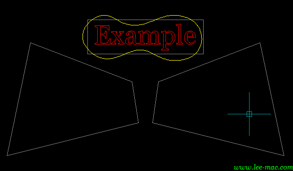
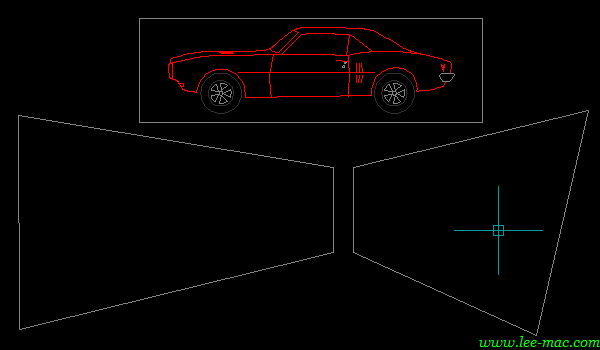
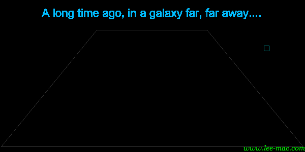

2D Projection
This page is delivered for consistency purposes only, as part of the LeeMac sample module of DynALisp, which shows how DynALisp turns existing AutoLISP programs into a module. The program and its description are the work of Lee Mac, who keeps all the credit for them. The original page, with the latest version, is on Lee Mac's website: https://lee-mac.com/2dprojection.html
| Function Syntax | LM-2DProjection – original syntax: 2dpro (see aliases) |
| Current Version | 1.0 |
| Compatible with AutoCAD for Mac? | No |
| Compatible with AutoCAD LT? | Yes |
| Original Page | lee-mac.com/2dprojection.html |
Program Description
Inspired by the superb Projective2D application published by the talented programmer Sean Tessier, here I present an open-source AutoLISP program offering similar functionality.
This program provides the user with a means of applying a projective transformation (also known as a homography, collineation, or less technically, a 'perspective' transformation), projecting a selected set of planar objects from one reference frame (or projective space) to another.
Upon issuing the command syntax 2dpro at the AutoCAD command-line, the user is prompted to select a set of 2D coplanar objects to be projected. This selection is restricted to Arcs, Circles, Elipses, Lines, LWPolylines, 2D (Heavy) Polylines, 2D Splines & Points.
The user is then prompted to select a source reference frame & a destination reference frame. For each of these prompts, the program requires the user to select a closed planar polyline (LWPolyline) with four non-collinear vertices. Following each selection, the program will ensure the points defining the reference frame are counter-clockwise oriented with the points ordered such that the lower-left vertex appears first.
Following valid user responses, the program will then convert the four 2D points defining each reference frame into homogeneous coordinates, and will calculate the transformation matrix to map from the source reference frame (or projective space) to the destination reference frame.
The program will then iterate over the set of selected objects and, for each object, will calculate a 2D point set describing or (in the case of curved objects) approximating the object. Each point is then converted to homogeneous coordinates and mapped to the destination reference frame using the tranformation matrix, before being converted back to cartesian coordinates.
The program will then generate either a Point, Line or LWPolyline from the mapped point(s) with properties matching those of the original object.
Demonstrations
Below are two examples demonstrating the use of the program to project a set of objects from an orthogonal reference frame to a skewed perspective, and then from one skewed perspective to another. Please note that the text in the following example was created using the Express Tools TXTEXP command and is hence composed of lines & polylines.
Example 1

Example 2

Example 3 (for fun!)

Bundled program notes
Tool description
This program provides the user with a means of projecting a
selected set of planar objects from one reference frame to another.
Upon issuing the command syntax '2dpro' at the AutoCAD
command-line, the user is prompted to select a set of 2D planar
objects to be projected. This selection is restricted to Arcs,
Circles, Elipses, Lines, LWPolylines, 2D (Heavy) Polylines,
2D Splines & Points.
The user is then prompted to select a source reference frame &
a destination reference frame. For each of these prompts, the
program requires the user to select a closed LWPolyline with four
non-collinear vertices. Following each selection, the program
will ensure the points are counter-clockwise oriented with the
points ordered such that the lower-left vertex appears first.
Following valid user responses, the program will then convert the
four 2D points defining each reference frame into homogeneous
coordinates, and will calculate the transformation matrix to map
from the source reference frame (or projective space) to the
destination reference frame.
The program will then iterate over the set of selected objects
and, for each object, will calculate a 2D point set describing or
(in the case of curved objects) approximating the object.
Each point is then converted to homogeneous coordinates and mapped
to the destination reference frame using the tranformation matrix,
before being converted back to cartesian coordinates.
The program will then generate either a Point, Line or LWPolyline
from the mapped point(s) with properties matching those of the
original object.
Author
Author: Lee Mac, Copyright © 2014 - www.lee-mac.com
Releases
Version 1.0 - 2014-10-10
First release.
Command Names And Aliases
As in every DynALisp module, each program of this sample module has one main command, named LM-*, and the original command names of Lee Mac's page are kept as its aliases: they run the same command, and can be added, renamed or removed in Dyl-Suite (saved in Resources\Aliases.csv). The rows marked ↳ are child commands of LM-2DProjection: they are run by their alias, or picked from LM-2DProjection when it lists them (their command is named Pst-*).
| Command | Aliases | Name |
|---|---|---|
| LM-2DProjection | 2DPRO | 2D Projection |
| ↳ 2DPRO-H | – | 2D Projection Help |